http://orcid.org/0000-0002-3224-8858
and Jack Wong
http://orcid.org/0000-0002-3224-8858
and Jack Wong
by Paul Murrell
http://orcid.org/0000-0002-3224-8858
and Jack Wong
Version 1: Wednesday 14 December 2022

This document
by Paul
Murrell is licensed under a Creative
Commons Attribution 4.0 International License.
The HyperFun Project provides a language and interpreter for describing 3D scenes using Function Representation and Constructive Solid Geometry. This document describes the R package 'hyperfun', which provides an interface to the HyperFun language and interpreter.
Constructive solid geometry (CSG) is a technique for creating complex three-dimensional shapes by combining simple three-dimensional shapes. For example, the shape shown on the right (below) is a complex shape that would be difficult to describe directly, but is easily produced by "subtracting" the simple sphere shown in the middle from the simple cube shown on the left.
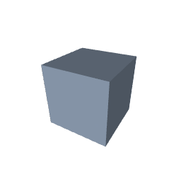 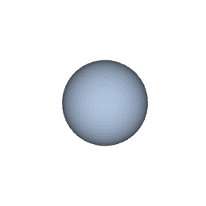 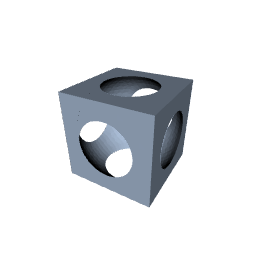
The HyperFun project
(Adzhiev et al., 2002)
defines a language for describing and combining
simple shapes and provides a program, hfp, which is an
interpreter for the HyperFun language and a viewer for the resulting
three-dimensional image. For example, the following HyperFun code describes
a sphere (centred at the origin, with a radius of 7), a cube (centred at the
origin, with a width, height, and depth of 12),
and an overall model that
consists of the sphere subtracted from the cube.
my_model(x[3], a[1])
{
array center[3];
array vertex[3];
center = [0, 0, 0];
sphere = hfSphere(x, center, 7);
vertex = [-6, -6, -6];
cube = hfBlock(x, vertex, 12, 12, 12);
my_model = cube \ sphere;
}
If the code above is saved in a file called csg.hf,
the following command runs the code and opens a window
to view the resulting image.
hfp csg.hf
The 'hyperfun' package provides an R interface to HyperFun so that R users can write idiomatic R code to generate, and view, complex three-dimensional shapes using the HyperFun system. For example, the following R code describes a sphere (with a radius of 7), a cube (with width, height, and depth of 12), and creates a model consisting of the sphere subtracted from the cube.
library(hyperfun)
sphere <- hfSphere(r = 7) cube <- hfBlock(dx = 12, dy = 12, dz = 12) model <- cube - sphere
The hfp() function calls the HyperFun program hfp
to calculate the resulting image and then
draws the image using the 'rgl' package ().
hfp(model)
Clearly, the headline act in this drama is the HyperFun system. However, the 'hyperfun' package makes three useful contributions:
Easy and familiar access to HyperFun for R users.
The convenience of the R packaging system means that the 'hyperfun' package is an easy way for R users to install and run HyperFun across multiple platforms.
A convenient and familiar interface to HyperFun for R users.
The 'hyperfun' package allows R users to write R code to create HyperFun models; they do not have to learn the HyperFun language.
The Section on The 'hyperfun' package gives an overview of the R functions provided by the 'hyperfun' package for creating HyperFun models.
An extension of HyperFun to include R functions.
The 'hyperfun' package provides an hfR() function
so that HyperFun objects can be defined using
R functions. This access to R makes it possible to express
a much wider range of HyperFun models than is possible with
the original HyperFun language.
The Section on Function representation describes this extension of HyperFun in more detail.
In basic usage of the 'hyperfun' package, we only need to make use of functions that define objects (three-dimensional shapes) and operators that can be used to combine objects.
We have already seen two functions that define objects,
hfSphere() for spheres and hfBlock()
for rectanguloid objects. In both cases, there are arguments
to control the placement and size of the objects.
For example, the following code defines a sphere centred at
(0, 0, 0), with radius 7.
sphere <- hfSphere(cx = 0, cy = 0, cz = 0, r = 7)
The print() method for objects shows the HyperFun code
that the object generates and the hfp() function
draws the object in an 'rgl' window.
sphere
HF_9_1(x[3], a[1])
{
array center[3];
center = [0, 0, 0];
sphere = hfSphere(x, center, 7);
HF_9_1 = sphere;
}
hfp(sphere)
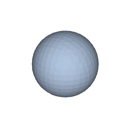
The following table lists the shapes that are currently available in 'hyperfun', along with the relevant function and sample output.
| Rectanguloid |
hfBlock(x, y, z, dx, dy, dz, jx, jy, jz) |
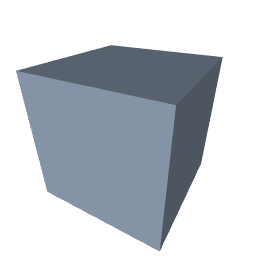 |
jx is justification (0 to 1). |
| Sphere |
hfSphere(cx, cy, cz, r) |
||
| Ellipsoid |
hfEllipsoid(cx, cy, cz, a, b, c) |
a is length of semi-axis in X dimension. |
|
| Cylinder |
hfCylinder(cx, cy, cz, r, axis) |
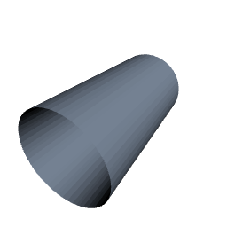 |
axis specifies the cone axis, e.g., "X". |
| Elliptic cylinder |
hfEllCylinder(cx, cy, cz, a, b, axis) |
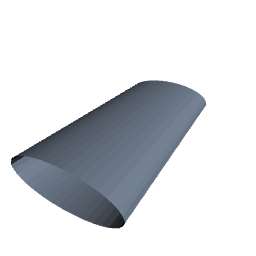 | See meaning of parameters for cones and ellipsoids. |
| Cone |
hfCone(cx, cy, cz, r, axis) |
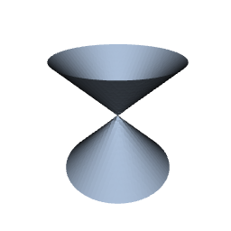 |
r is cone radius at height 1. |
| Elliptic cone |
hfEllCone(cx, cy, cz, a, b, axis) |
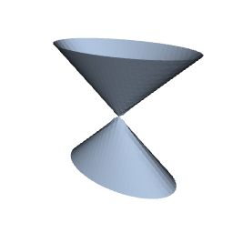 | See meaning of parameters for cones and ellipsoids. |
| Torus |
hfTorus(cx, cy, cz, R, r0, axis) |

|
R is radius of revolution; r0 is radius of disk. |
| Super ellipsoid |
hfSuperEll(cx, cy, cz, a, b, c, s1, s2) |
s1 controls "sharpness" in z-direction;
s2 controls "sharpness" in xy-direction. |
|
| Blobby object |
hfBlobby(x0, y0, z0, a0, b0, T) |
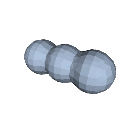 |
x0 specifies X centres of blobs;
a0 and
b0 and
T control how connected the blobs are. |
Objects can be combined using arithmetic and logical operators.
For example, the following code subtracts an inverted sphere from a cube;
rather than carving a hole out of the centre of the cube, this
chops the corners off the cube.
Again, the print() method shows the corresponding HyperFun code
and hfp() draws the resulting image.
model <- cube - !sphere model
HF_7_1(x[3], a[1])
{
array vertex[3];
vertex = [-6, -6, -6];
block = hfBlock(x, vertex, 12, 12, 12);
HF_7_1 = block;
}
HF_9_1(x[3], a[1])
{
array center[3];
center = [0, 0, 0];
sphere = hfSphere(x, center, 7);
HF_9_1 = sphere;
}
HF_31_1(x[3], a[1])
{
HF_31_1 = ~HF_9_1(x, a);
}
HF_32_1(x[3], a[1])
{
HF_32_1 = HF_7_1(x, a) \ HF_31_1(x, a);
}
my_model(x[3], a[1])
{
my_model = HF_32_1(x, a);
}
hfp(model)
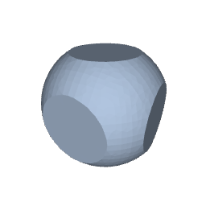
The list below shows the set of available operators:
| operator (vertical bar; logical or)
produces the union of two objects.
& operator (ampersand; logical and)
produces the intersection of two objects.
- operator (minus) subtracts one object from another.
! operator (exclamation; logical not)
inverts an object so that the interior of the
object becomes its exterior.
The arguments to functions that define objects,
like hfSphere() and hfBlock(),
can be vectors, so it is easy to define
several objects at once. For example, the following code
defines eight spheres arranged in a circle.
t <- seq(0, 2*pi, length.out=9)[-1] x <- 7*cos(t) z <- 7*sin(t) spheres <- hfSphere(cx = x, cz = z, r = 2)
hfp(spheres)
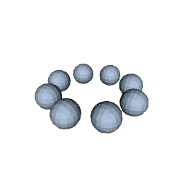
hfp() function
The spheres in the image above
are quite coarse; there are
fewer facets on each of the spheres.
We can provide arguments to the hfp() function
to increase the resolution of the final image.
For example, the following code draws the multiple spheres using
a higher density value (the default is 30),
which produces much smoother spheres.
hfp(spheres, density = 100)
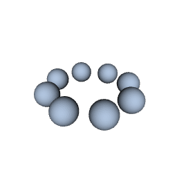
Another parameter that affects the final image is the bounding
box used by the HyperFun system. There is a bbox argument
to hfp() to control this bounding box.
For example, the following code draws the multiple spheres again,
but with a bounding box that cuts the spheres in half.
The default bounding box has limits from -10 to 10 in each dimension,
but this code sets the limits in the y-dimension from -5 to 0.
hfp(spheres, density = 100, bbox = c(-10, -5, -10, 10, 0, 10))
By default, hfp() function
draws the final image in an 'rgl' window, but we can instead
produce an output file if we specify a format value.
For example, the following code generates an
STL file;
possible formats are "stl" for STL,
"stlb" (STLB; binary STL), "pov"
(POV-Ray),
"cli"
(CLI),
and "wrl"
(VRML).
The default format that draws on screen is "rgl".
stlFile <- hfp(hfSphere(), format="stl")
The name of the STL file that is generated
is returned by hfp().
stlFile
[1] "/tmp/Rtmp9lP91A/file476ff29235.stl"
Any further arguments are passed to rgl::readSTL()
(if format="rgl"). For example, the following code
specifies a surface colour and a specular colour for rendering.
hfp(hfSphere(), color="blue", specular="black")
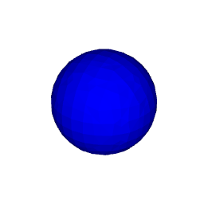
hfModel() function
When we combine objects using one of the arithmetic or logical operators,
the result is a model.
We can also explicitly create a model using the hfModel()
function, which takes one or more objects and an operator to combine them.
For example, the following two expressions produce exactly
the same result.
cube - sphere hfModel(cube, sphere, op="-")
A model can also consist just of a single object, as shown below.
hfModel(cube)
HF_7_1(x[3], a[1])
{
array vertex[3];
vertex = [-6, -6, -6];
block = hfBlock(x, vertex, 12, 12, 12);
HF_7_1 = block;
}
HF_43_1(x[3], a[1])
{
HF_43_1 = HF_7_1(x, a);
}
my_model(x[3], a[1])
{
my_model = HF_43_1(x, a);
}
When we define multiple objects at once and create a model that combines those multiple objects with another object, the multiple objects are first "reduced" to a single model that consists of the union of the multiple objects. For example, the following code subtracts the cube from earlier examples from the eight spheres. The eight spheres are first "reduced" to the union of the eight spheres and then the cube is substracted.
hfp(spheres - cube, density = 100)

If we want to reduce multiple objects to a single model using
a different operator, we can use the hfModel()
function. For example, the following code draws two spheres
that overlap with each other.
twoSpheres <- hfSphere(c(-2, 2), c(0, 1), c(0, 1), r=2.5)
hfp(twoSpheres)
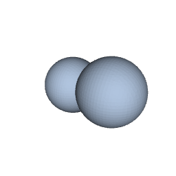
The following code uses the - (minus) operator to reduce
the multiple spheres, which leaves one sphere with a bite taken out of
it (or a "death star" if you are that way inclined).
spheresMinus <- hfModel(twoSpheres, op="-")
hfp(spheresMinus)
The hfModel() function can also be used
to combine more than two objects or models at once.
For example, the following code subtracts our original
sphere from our original cube and then also
subtracts the circle of smaller spheres from the result.
threesome <- hfModel(cube, sphere, spheres, op="-")
hfp(threesome)
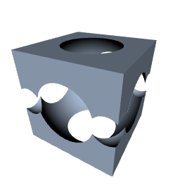
We can give the hfp() function a character vector as
the first argument, in which case the character values are assumed to be raw
HyperFun code. The character values are evaluated using
hfp and the result is drawn with 'rgl'.
For example, suppose we have a character vector called
hfCode that contains the raw HyperFun code from the
very first example in the introduction.
hfCode
[1] "my_model(x[3], a[1])"
[2] "{"
[3] " array center[3];"
[4] " array vertex[3];"
[5] " center = [0, 0, 0];"
[6] " sphere = hfSphere(x, center, 7);"
[7] " vertex = [-6, -6, -6];"
[8] " cube = hfBlock(x, vertex, 12, 12, 12);"
[9] " my_model = cube \\ sphere;"
[10] "}"
hfp(hfCode)
We can also provide just a single character value as the first
argument to hfp(), in which case the value is
interpreted as the name of a file that contains HyperFun code.
For example, the following code produces the same sphere result.
writeLines(hfCode, "csg.hf")
hfp("csg.hf")

All of the HyperFun examples so far have made use
of predefined HyperFun functions such as hfSphere()
and hfBlock(). These predefined functions are known as the
FRep library.
However, this FRep library is actually just a convenience layer on top
of a much more general and powerful idea: Function Representation
(FRep).
In the HyperFun system, a three-dimensional solid is defined by a function of three variables (x, y, z); conceptually, the function is evaluated at all values of (x, y, z) and regions that produce a negative value are inside the solid, regions that produce a positive values are outside the solid, and the boundary, where the function returns zero, defines the surface of the solid. For example, the following HyperFun code defines a paraboloid. For any (x, y, z) coordinate, the model returns y minus the sum of half-x squared and half-z squared. This creates a surface wherever that expression is zero, which describes the paraboloid $y = (x/2)^2 + (z/2)^2$.
my_model(x[3], a[1])
{
my_model = x[2] - (x[1]/2)^2 - (x[3]/2)^2;
}

hfR() function
The 'hyperfun' package provides functions such as
hfSphere() and hfBlock() that correspond to
functions in the HyperFun FRep library. In addition,
the 'hyperfun' package provides an hfR()
function that allows the user to define a HyperFun object in terms
of an R function.
The argument to hfR()
is a function that should accept a single argument, which is a
numeric vector of three values, and it should return a single
numeric value.
This means that with 'hyperfun' we can express three-dimensional objects using FRep, by writing an R function. For example, the following code defines a paraboloid.
f <- function(xyz) xyz[2] - (xyz[1]/2)^2 - (xyz[3]/2)^2 paraboloid <- hfR(f)
hfp(paraboloid)
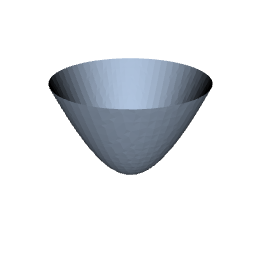
The downside to using hfR() is that the R function
gets evaluated many times for many different xyz values, so this
is slower than coding directly in HyperFun.
On the other hand, being able to write an R function means
that we have access to the full generality of the R language
and all of its extension packages. This
greatly expands the sort of surface that we can easily express
in FRep.
For example, the following code draws a multivariate normal surface.
library(mvtnorm) mvnorm <- hfR(function(xyz) xyz[2] - 20*dmvnorm(sqrt(sum((xyz[c(1, 3)]/2)^2))))
hfp(mvnorm)
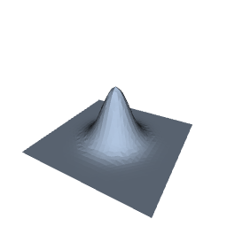
The hfR() function also provides an easier way
for users to extend the FRep library. Adding a new shape to
the FRep library itself requires writing C code and compiling a
new version of hfp. With hfR(),
and the general extensible nature of R,
users are able to write their own hf*() function
and share it with others easily.
For example, the following code defines
a new hfParaboloid() function with parameters to
control the curvature in both x and z dimensions.
hfParaboloid <- function(a = 1, b = 1) { f <- function(xyz) { xyz[2] - sign(a)*(xyz[1]/a)^2 - sign(b)*(xyz[3]/b)^2 } hfR(f) }
With that function defined, anyone can easily create a variety of paraboloids. For example, the following code draws a saddle-shaped paraboloid.
saddle <- hfParaboloid(2, -2)
hfp(saddle)
The 'hyperfun' package is useful for describing 3D objects in R. The ability to describe an object using FRep and the ability to describe an object in terms of intersections and unions of other objects makes it easier to describe more complex 3D objects. But what use are 3D objects in R? The established guidelines for data visualisations (Cleveland, 1985; Cleveland, 1993; Ware, 2012) advise against the use of 3D objects to convey information from data. Are there any valid (statistical [graphics]) applications for 3D objects in R?
One possible application is statistical diagrams to help explain mathematical algorithms. For example, the diagram below might be used to help visualise the solution space based on a set of three linear constraints. The planes representing the linear constraints can be expressed mathematically using FRep and the solution space is naturally expressed by intersecting the three planes using CSG.
The HyperFun Project provides a language and interpreter for describing 3D scenes that is very powerful and convenient because it harnesses both FRep and CSG. However, there are several limitations:
The HyperFun language has limitations. For example,
it supports mathematical functions like sqrt,
log, and sin, but only a small set
of such functions.
The FRep library is difficult to extend. Adding new FRep functions requires writing C code and recompiling the HyperFun interpreter.
The official HyperFun web site, hyperfun.org,
has been abandoned. A copy of the web site
is still available at http://paulbourke.net/dataformats/hyperfun/,
but that is also a little out of date and does not contain
as many examples of HyperFun programs as the official web site had.
On the other hand, the HyperFun source code is still available from
SourceForge.
The 'hyperfun' package for R provides an easy way (for R users)
to access, install,
and run the HyperFun interpreter. It also provides a
convenient interface (for R users) to generate 3D models
in the HyperFun language. Furthermore, the 'hyperfun' package,
with its hfR() function,
provides a generalised extension mechanism for the HyperFun
language. We can describe 3D shapes using FRep
simply by writing R functions. This combines the full power, flexibility,
and extensibility of R with the HyperFun Project.
The description of a 3D model in HyperFun code is a pure,
typically continuous, mathematical
description.
However, the generation of 3D output from a HyperFun model,
whether on screen or by writing to
an external file, involves the construction of a finite polygon mesh
from the HyperFun model.
The HyperFun interpreter constructs a polygon mesh by evaluating
the HyperFun model at locations on a regular grid in
3D space. The bounds of this grid are controlled by the
bbox argument to the hfp() function and
the resolution of the grid is controlled by the
density argument.
Some care is required to make sure that the resolution of the regular grid is sufficiently high to capture all details of 3D objects. Even something as simple as a plane can disappear in the final rendering if the plane is aligned with one of the main axes, but is not aligned with the regular grid.
Generating 3D output requires at least one evaluation for each model at each location on the regular grid, so more complex models, involving more 3D objects, and higher resolution scenes require a larger number of evaluations. More evaluations means a longer run time and the increase is roughly linear in terms of number of 3D objects and cubic in terms of grid density, as shown in the plots below.
The HyperFun Project is not the only system that provides CSG and/or FRep.
However, because the HyperFun source is distributed as
part of the 'hyperfun' package, and because it is relatively
easy to translate R expressions (like hfSphere())
into the HyperFun language
and to integrate R expressions with the HyperFun language (via
the hfR() function),
the 'hyperfun' package provides a nice low-dependency, high-level
interface for working with CSG and FRep.
Several R packages provide interfaces to much larger and more complex 3D graphics systems, though these tend to be lower level and even if they provide CSG they do not support FRep. For example, the 'rgl' package provides an interface to OpenGL and the 'Rvcg' package (Schlager, 2017) provides an interface to the VCG computer graphics library. There are also several packages that provide at least limited interfaces to the CGAL graphics library: 'cgalMesh' (NA), 'MeshesTools' (Laurent, 2022b), and 'PolygonSoup' (Laurent, 2022c).
There are other computer graphics libraries that provide both CSG and FRep, for example, libfive and ImplicitCAD. These are both more modern than HyperFun and creating an R interface could be worth exploring, particularly for ImplicitCAD; an interface for libfive may require more effort due to the lower-level nature of the library.
Another interesting package is 'isocubes' (mikefc, 2022). This is limited to isometric renderings of 3D cubes, but it includes the concept of signed distance fields (SDF; or signed distance functions), which appear to be FRep by another name.
There are several areas where the 'hyperfun' package could be
worked on further. For a start, there are still FRep library
functions in HyperFun that have no R function counterpart,
e.g., hfMetaball for describing metaballs
(Nishimura et al., 1985)
and hfSoft for describing soft objects
(Wyvill et al., 1986).
These absences also include functions for transforming
objects such as translation and rotation, but also stretching
and twisting.
The HyperFun language also allows for specifying attributes of 3D objects, such as colours and material properties, but there is currently no way to access this from 'hyperfun'.
If the parallels between FRep and SDF hold true then it would be worthwhile exploring further transformations beyond what already exists in the FRep library, such as champfers and border grooves.
Finally, an interface to a more modern system like ImplicitCAD could be explored.
The examples and discussion in this report relate to version 0.1-0 of the 'hyperfun' package.
This report was generated within a Docker container (see Resources section below).
Murrell, P. and Wong, J. (2022). "Constructive Solid Geometry and Function Representation in R" Technical Report 2022-??, Department of Statistics, The University of Auckland. Version 1. [ bib | DOI | http ]
This document
by Paul
Murrell is licensed under a Creative
Commons Attribution 4.0 International License.